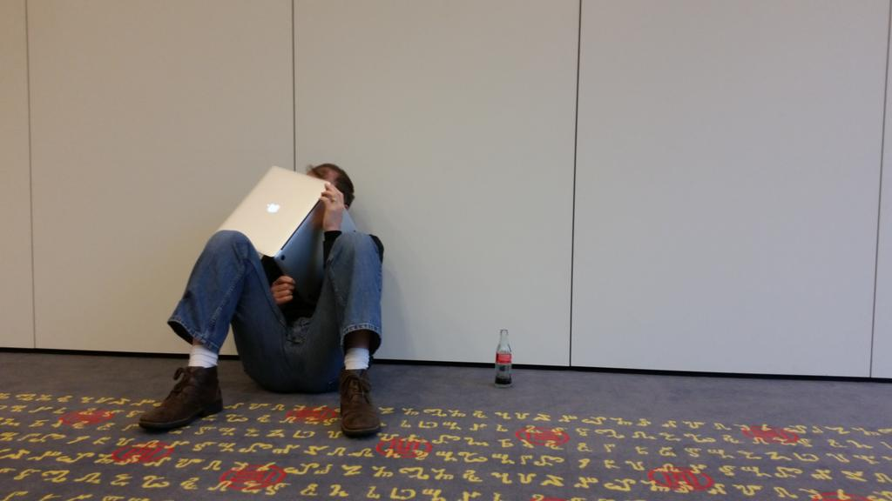

Embedding an Interactive View and Data IFC Model
Here is an interactive 3D sample embedding of an IFC file uploaded to A360 to answer a question in this morning's DevDays conference here in Munich:
Click to navigate, rotate, pan and zoom as you like.
I was prompted to upload and test the IFC file format translation by Adam Nagy, sitting together in the back row, after taking neat pictures of Cyrille's new headset:

I simply grabbed an old sample IFC file (6.5 MB) I had sitting on the disk, uploaded it to A360 and embedded it here into this post.
It only took a handful of minutes to complete the whole process.
Here are some other samples of developers experimenting with similar things in the past few days: